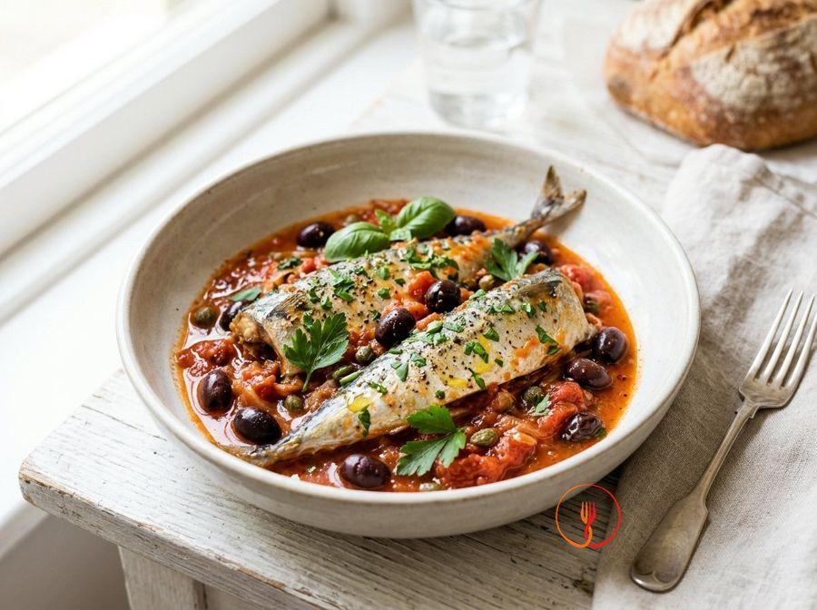

Sgombro in umido con pomodoro e olive
Un secondo piatto di pesce azzurro saporito e nutriente, perfetto per far apprezzare lo sgombro a tutta la famiglia grazie al sugo cremoso. La combinazione di pomodoro e olive nere mitiga il gusto intenso del pesce, rendendo la ricetta equilibrata ed estremamente economica.
Un secondo piatto di pesce saporito e rustico, dove lo sgombro viene esaltato da un sugo ricco di pomodoro e olive nere. La carne dello sgombro rimane succosa grazie alla cottura lenta in umido, rendendo il piatto perfetto da accompagnare con del pane tostato.
Ingredienti
- Sgombro fresco intero (pulito)800 g
- Polpa di pomodoro400 g
- Olive nere denocciolate80 g
- Cipolla dorata60 g
- Vino bianco secco50 ml
- Olio extravergine d'oliva30 ml
- Aglio1 pz
- Origano secco5 g
- Prezzemolo fresco10 g
- Sale fino4 g
- Pepe nero2 g
Allergeni
Pesce
Procedimento
- Lava con cura 800 g di sgombro già pulito sotto acqua corrente fredda, eliminando eventuali residui di interiora e tamponandolo bene con carta assorbente. Utilizza un coltello affilato per praticare due o tre tagli trasversali profondi su ogni lato del pesce, arrivando fino alla lisca centrale. Questa operazione, da fare con mano ferma, permetterà al calore e ai sapori del sugo di penetrare uniformemente durante la cottura. Otterrai dei pesci pronti per la padella, ben asciutti e incisi in modo regolare. Il consiglio dello chef: se preferisci un servizio più veloce per i bambini, puoi sfilettare lo sgombro prima della cottura, riducendo però i tempi della fase finale a soli 5 minuti complessivi.
- Trita finemente 60 g di cipolla dorata e schiaccia leggermente uno spicchio d'aglio con il dorso di un coltello pesante per facilitare il rilascio degli oli essenziali. Versa 30 ml di olio extravergine d'oliva in una padella antiaderente molto ampia e scalda a fiamma medio-bassa per circa un minuto prima di aggiungere gli odori. Lasciali appassire dolcemente per 5-6 minuti, mescolando spesso con un cucchiaio di legno per evitare che prendano colore troppo velocemente. La cipolla dovrà diventare traslucida e sprigionare un profumo dolce, senza presentare parti bruciate che renderebbero il piatto amaro. Il consiglio dello chef: aggiungi un cucchiaio d'acqua durante il soffritto per mantenere la temperatura bassa e rendere la cipolla più digeribile.
- Alza leggermente la fiamma e versa 50 ml di vino bianco secco nella padella, lasciando che la parte alcolica evapori completamente per circa 2 minuti. Agita la padella con movimenti rotatori per amalgamare i grassi dell'olio con l'acidità del vino fino a quando non sentirai più l'odore pungente dell'alcol salire dal vapore. Questa sfumatura serve a sgrassare il fondo di cottura e a preparare la base aromatica necessaria per equilibrare la grassezza naturale del pesce azzurro. Otterrai un fondo profumato, leggermente ridotto e privo di asperità alcoliche. Il consiglio dello chef: utilizza un vino di buona qualità, lo stesso che servirai a tavola, per evitare di trasferire note metalliche o troppo acide al sugo finale.
- Unisci 400 g di polpa di pomodoro e 80 g di olive nere denocciolate, intere o tagliate a rondelle secondo la tua preferenza estetica. Regola di sale e pepe nero, aggiungendo anche 5 g di origano secco per richiamare i sapori classici della cucina mediterranea. Mescola bene con il cucchiaio di legno e porta il composto a un leggero bollore mantenendo una fiamma media. Il sugo inizierà a prendere corpo, amalgamando la dolcezza del pomodoro con la sapidità delle olive. Il consiglio dello chef: se il pomodoro dovesse risultare eccessivamente acido al palato, aggiungi un pizzico di zucchero (meno di mezzo cucchiaino) per bilanciare perfettamente il sapore del condimento.
- Abbassa la fiamma al minimo, copri la padella con un coperchio e lascia cuocere il sugo per circa 10 minuti, mescolando di tanto in tanto per verificarne la densità. La consistenza dovrà diventare leggermente più corposa e il pomodoro dovrà perdere la sua nota vegetale cruda, acquisendo un colore rosso intenso e invitante. Se noti che il sugo si asciuga troppo velocemente, aggiungi un paio di cucchiai di acqua calda per mantenerlo fluido e cremoso. Otterrai una base ricca e saporita, perfetta per accogliere il pesce. Il consiglio dello chef: non eccedere con il sale in questa fase, poiché le olive e la riduzione del sugo aumenteranno naturalmente la sapidità del piatto durante il resto della preparazione.
- Adagia delicatamente i quattro sgombri nella padella, sistemandoli in un unico strato in modo che siano parzialmente immersi nel sugo di pomodoro bollente. Copri nuovamente con il coperchio e mantieni la fiamma a un'intensità medio-bassa, lasciando cuocere il pesce per circa 7 minuti senza toccarlo. È fondamentale mantenere l'integrità del pesce evitando di muoverlo inutilmente, così che la pelle rimanga intatta e le carni si cuociano uniformemente grazie al vapore trattenuto. Noterai che il pesce inizierà a cambiare colore, passando dal grigio traslucido a un bianco opaco e compatto. Il consiglio dello chef: se la padella non è abbastanza grande, disponi i pesci in modo alternato testa-coda per ottimizzare lo spazio e garantire che tutti ricevano lo stesso calore.
- Gira gli sgombri con estrema delicatezza utilizzando una spatola larga o due cucchiai, facendo attenzione a non rompere la pelle o le code. Continua la cottura per altri 6-7 minuti senza il coperchio, bagnando occasionalmente il dorso del pesce con un po' di sugo prelevato dal fondo della padella. La carne dello sgombro dovrà risultare tenera al tatto e la pelle dovrà apparire leggermente velata dal pomodoro, segno di una perfetta osmosi tra gli ingredienti. Il sugo si sarà ulteriormente ristretto, diventando lucido e avvolgente grazie alla fusione con i grassi omega-3 rilasciati dal pesce. Il consiglio dello chef: evita assolutamente di prolungare la cottura oltre i tempi indicati; lo sgombro è un pesce magro nelle fibre che diventa rapidamente asciutto e fibroso se stracotto.
- Spegni il fuoco e cospargi il piatto con 10 g di prezzemolo fresco tritato grossolanamente al momento per preservare tutta la sua freschezza e i suoi oli volatili. Lascia riposare il tutto per 2-3 minuti nella padella spenta prima di procedere all'impiatttamento, permettendo ai sapori di stabilizzarsi e alle fibre del pesce di rilassarsi completamente. Distribuisci uno sgombro per ogni piatto, irrorandolo generosamente con il sugo di pomodoro e le olive nere. Il risultato finale sarà un secondo piatto colorato, profumato e dal sapore intenso tipico della tradizione marinara povera. Il consiglio dello chef: accompagna lo sgombro con delle fette di pane casereccio tostato o con delle patate lesse, ideali per raccogliere tutto il pregevole intingolo rimasto in padella.
Consigli
- Lascia sfumare completamente il vino bianco a fiamma vivace prima di aggiungere la polpa di pomodoro.
- Non girare troppo spesso il pesce durante la cottura per evitare di rompere i filetti interi.
- Servi il piatto ben caldo, completando con un filo d'olio extravergine a crudo e il prezzemolo fresco.
Varianti
- Aggiungi un pizzico di peperoncino fresco per una versione più piccante e intensa.
- Sostituisci le olive nere con dei capperi dissalati per un profilo aromatico ancora più sapido.
Valori nutrizionali (stima)
| Per porzione (320 g) | Per 100 g | |
|---|---|---|
| Energia | 1610 kJ / 385 kcal | 503 kJ / 120 kcal |
| Proteine | 29.5 g | 9.2 g |
| Carboidrati | 6.8 g | 2.1 g |
| di cui zuccheri | 4.5 g | 1.4 g |
| Grassi | 26.7 g | 8.3 g |
| di cui saturi | 5.4 g | 1.7 g |
| Fibre | 2.2 g | 0.7 g |
| Sale | 1.4 g | 0.4 g |
Valori stimati con l'AI su dati medi CREA / USDA: sono indicativi e non sostituiscono il parere di un medico o di un nutrizionista.
Apri la ricetta nell'app per la lista della spesa, le schede ingredienti e i negozi vicini.